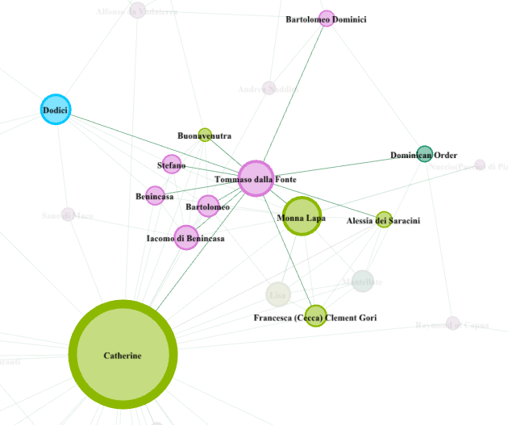

As Catherine’s first confessor, he had a long standing relationship with her that resonates in the letters addressed to him.1 Their relationship has a larger history than most of her companions because he was also her first cousin and grew up in the same home as her, as his parents died in the plague of 1348. He kept many spiritual notes about her life that helped Raymond of Capua write his hagiography (these notes have not survived). During these letters Catherine confided in and gave advice to Tommasso. The initial letter is placed during 1368 well before Catherine developed a clear writing style and before she was well known to the larger Italian world. Catherine wrote to Tommasso while he was away from Siena offering her advice, “It seems to me you are planning to go somewhere else. I didn’t think you ought to do that now, but let it be the way God and and you want it.”2 The relationship between Tommasso and Catherine went further than confessor and mystic because of the blood relative status of their connection and they appeared to be close friends as well.